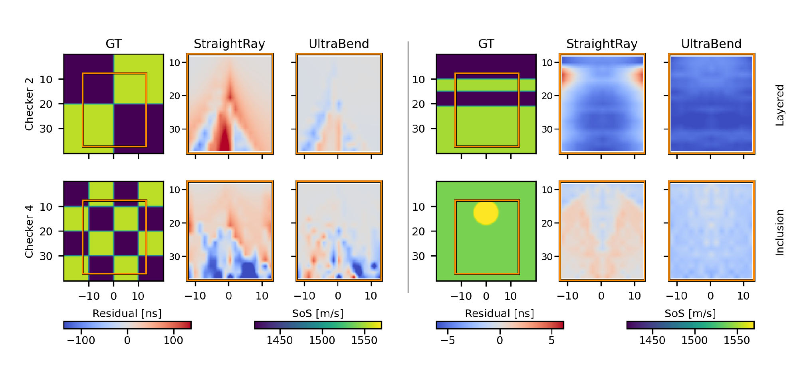
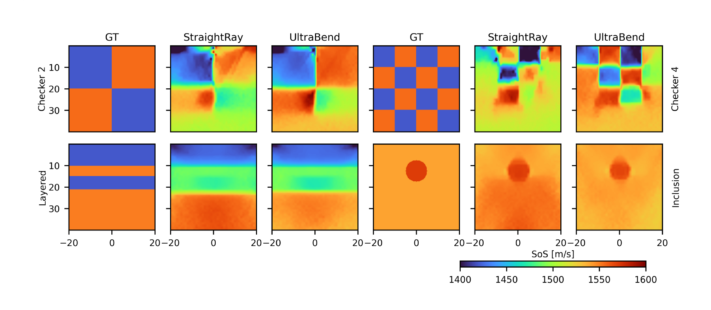

UltraBend: Refraction-Aware Propagation Modeling for Speed of Sound Imaging in Ultrasound
Felix Dülmer, Samuel Beuret, Benjamin N. Frey, Mohammad Farid Azampour, Nassir Navab, Jeremy J. Dahl
ASMUS 2026 (MICCAI Workshop)
Best Presentation Award · ASMUS 2026
Abstract
The local speed of sound (SoS) of human soft tissues is a promising quantitative biomarker for the diagnosis of diseases such as breast cancer or fatty liver disease. One approach to estimate local SoS from pulse-echo ultrasound signals is the autofocusing method, which optimizes for the propagation model that best aligns beamformed signals recorded from different transmit–receive apertures. However, most pulse-echo autofocusing methods still rely on a straight-ray hypothesis, thus neglecting refraction effects occurring in heterogeneous media. To address this shortcoming, we introduce UltraBend, which replaces straight-line travel-time approximations with a refraction-aware bent-ray model for local SoS optimization. We compare our method with a state-of-the-art autofocusing method assuming straight-ray wave propagation and show that UltraBend reduces the mean absolute reconstruction SoS error relative to a straight-ray baseline on all evaluated phantoms, including a reduction from 8.51 to 3.70 m/s on an inclusion phantom. These results suggest that improved modeling of wave propagation can substantially improve pulse-echo SoS imaging.

Video
Speed-of-sound optimization with refraction-aware ray tracing.
Overview
Key figures from UltraBend are shown below.
Refraction-aware travel times
For each active array element, rays are traced through the current speed-of-sound field (figure above). Nearby autofocus targets accumulate arrival-time estimates through a Gaussian kernel, where the along-ray offset corrects the travel time and the orthogonal offset sets the deposition weight. This captures first-order refraction without solving a separate two-point ray path for every element–target pair, and a fixed-replay adjoint provides gradients without storing the full ray-tracing history.
Arrival-time accuracy
Compared to k-Wave simulations, bent rays reduce one-way arrival-time residuals where refraction is strong, particularly below the inclusion and across high-contrast checkerboard structures. Orange boxes mark the receiver-grid region.


| Case | StraightRay | UltraBend |
|---|---|---|
| Layered | 4.18 ± 2.38 | 5.34 ± 1.94 |
| Inclusion | 2.80 ± 2.77 | 2.52 ± 2.23 |
| Checker 2 | 66.54 ± 135.86 | 21.27 ± 67.35 |
| Checker 4 | 76.14 ± 156.99 | 45.66 ± 141.51 |
One-way time-of-flight residuals relative to k-Wave (mean absolute residual ± std, ns). Best values in bold.
Speed-of-sound reconstruction
Against a straight-ray differentiable beamforming baseline, UltraBend lowers the mean absolute SoS error on all four phantoms, most clearly on the inclusion phantom (8.51 → 3.70 m/s), and better preserves high-contrast structure in the checkerboards. Remaining errors concentrate near sharp interfaces and caustics, where the first-arrival ray assumption is least valid.


| Case | StraightRay | UltraBend |
|---|---|---|
| Layered | 24.73 ± 24.89 | 24.10 ± 24.51 |
| Inclusion | 8.51 ± 5.59 | 3.70 ± 3.76 |
| Checker 2 | 37.94 ± 28.15 | 34.72 ± 38.33 |
| Checker 4 | 55.83 ± 34.46 | 49.25 ± 44.90 |
Speed-of-sound reconstruction error (MAE ± std of the absolute error, m/s). Best MAE in bold.
Citation
If you find this work useful, please cite:
@inproceedings{duelmer2026ultrabend,
title={UltraBend: Refraction-Aware Propagation Modeling for Speed of Sound Imaging in Ultrasound},
author={Duelmer, Felix and Beuret, Samuel and Frey, Benjamin N. and Azampour, Mohammad Farid and Navab, Nassir and Dahl, Jeremy J.},
booktitle={International Workshop on Advances in Simplifying Medical Ultrasound},
year={2026},
organization={Springer}
}